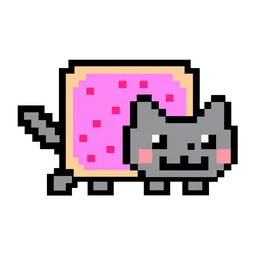
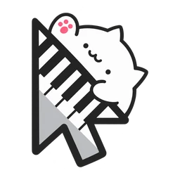
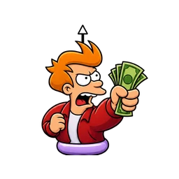
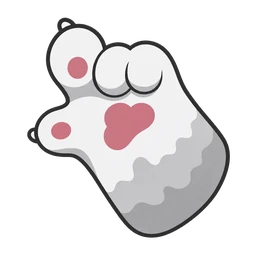
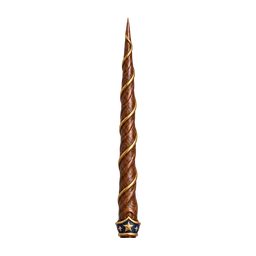

Охуенные
курсоры.


68 штук
в комплекте
Включаешь демонстрацию экрана. Все смотрят на кота. Теперь можно начинать созвон.
◆ ЗУМ ◆ УРОКИ ◆ ПИТЧИ ◆ КОТЫ ◆ ЗУМ ◆ УРОКИ ◆ ПИТЧИ ◆ КОТЫ ◆ ЗУМ ◆ УРОКИ ◆ ПИТЧИ ◆ КОТЫ ◆ ЗУМ ◆ УРОКИ ◆ ПИТЧИ ◆ КОТЫ
Проверка
связи.
Води мышкой по сцене, щёлкай, пробуй разные указки. На телефоне можно тапать. Кот умеет тарабанить.
СЦЕНА ВЕЩАНИЯКомиксная рука
Клик, тап, Enter или пробел
100%
Весь
зверинец.
68 указателей из PlayPointer. Выбирай любого, и он сразу выйдет на сцену.
68 указателей
Вернуться на сцену ↑
Кому это
сдалось?

Инфобизнесу
Покажи на тариф. Пусть Фрай первым попросит забрать его деньги.
Музыкантам
Кот играет лапами. Ты говоришь, что это саундчек.
Инфлюенсерам
Оставь радужный след в кадре. Пусть монтажёр сам решает, где тут спецэффекты.

Кошатникам
Лапка гонится за лазером. Наконец-то у указателя есть мотивация.

Преподам
Покажи ребёнку дроби, коту ипотеку, хомяку его квартальный отчёт.
Как
установить.
Выбери свою систему. Здесь можно скачать PlayPointer или открыть инструкцию на GitHub.